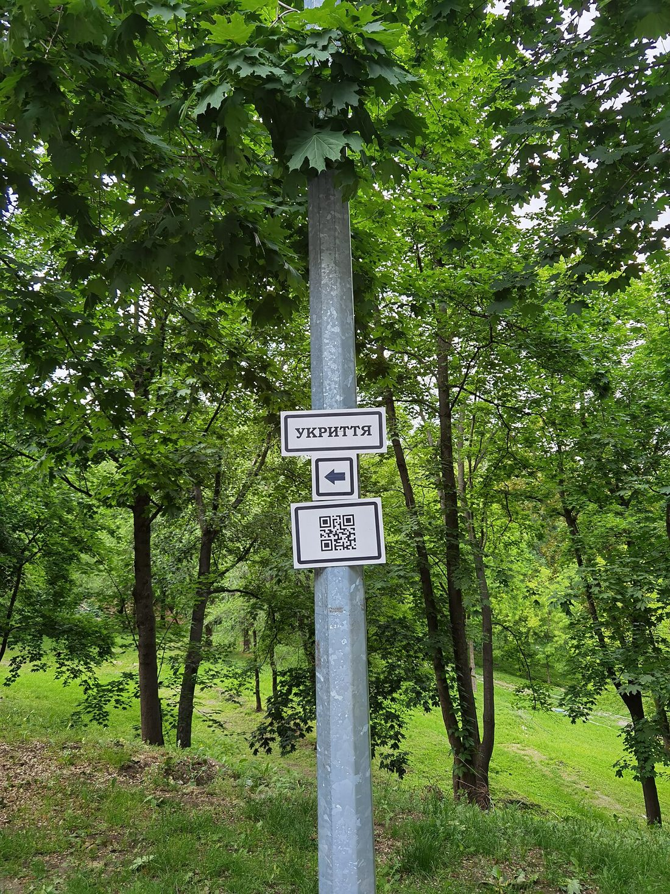

🔥 戰爭爆發時 · 危機應變
🚨 空襲警報響起怎麼辦
空襲或飛彈警報的殘酷之處，在於從警報響起到攻擊落地，往往只有幾分鐘。這幾分鐘你會怎麼反應，取決於你「事前是否想過」。這篇把警報聲的差別、收到警報的第一時間動作、去哪裡躲、臥倒掩蔽的姿勢，以及爆炸當下如何保命，整理成能在慌亂中照做的步驟。

▲ 指向防空避難所的標示牌（烏克蘭第聶伯羅）。平時就記住住家、公司附近的避難處所位置，警報響起才不會慌。圖片：Alex Blokha，Wikimedia Commons，授權 CC BY-SA 4.0。
先聽懂：警報聲在說什麼
各國警報聲的規格略有差異，但可以掌握一個通則：
| 警報型態 | 常見含義 | 你該做的事 |
|---|
| 忽高忽低、連續起伏的長音 | 危險／空襲警報 | 立即避難掩蔽 |
| 平穩不變的長音 | 解除警報 | 危險解除，仍留意後續 |
| 手機刺耳警示音＋震動＋文字 | 災防告警（飛彈、空襲等） | 依螢幕文字指示行動 |
現代最重要的來源是手機的「災防告警細胞廣播」（PWS/CBS）——它會直接推播文字說明警報性質與範圍。一律以官方訊息內容為準，別靠猜。平時別關閉手機的緊急警報功能。
收到警報：黃金幾分鐘的動作
核心口訣：停下 → 找掩蔽 → 護頭頸 → 等解除。不要張望、不要拍照、不要衝回去拿東西。
- 立刻停止手邊活動，判斷你現在在室內還是室外。
- 往堅固結構移動：地下室、最低樓層、建築物內側。
- 遠離玻璃與外牆——爆炸的衝擊波會讓窗戶碎裂噴射，玻璃碎片是常見的傷害來源。
- 掩蔽並保護頭頸，等待警報解除或官方通知。
去哪裡躲：避難地點的優先順序
在室外時
- 就近進入堅固建築物的地下室（防空避難處所優先）。
- 沒有地下室，就進入建築物最低樓層、遠離窗戶的內側空間。
- 來不及進建築物時，趴在堅固結構旁的低窪處（如混凝土牆邊、地下道），遠離車輛、加油站與玻璃帷幕。
在室內時
- 到建築物中央、遠離外牆與窗戶的樓梯間或內側房間（「愈厚的牆愈多層愈好」）。
- 躲到堅固桌子下或牆角內側，避開吊燈、書櫃等會掉落的物品。
- 可先關閉瓦斯與非必要電源，但安全優先，別為此耽誤掩蔽。
💡 平時就先查好
用官方管道或街上標示，事先記住住家、公司、孩子學校附近的防空避難處所；把路線和家人講清楚，並納入〈家庭防災計畫〉的會合安排。慌亂中靠記憶行動，比臨場找快得多。
在不同場所收到警報怎麼辦
你不會永遠在家。警報可能在任何地點響起，先想過各種場景，臨場才不會愣住：
- 開車時：盡快把車停到路邊安全處（別停在橋上、隧道口、加油站旁），下車進入附近堅固建築物掩蔽。車子擋不住彈片與衝擊波，別以為躲車裡就安全；若真的無處可去，把車停好、放低身體、遠離擋風玻璃。
- 在高樓層：不要搭電梯，改走樓梯往下到最低樓層或地下室；來不及下樓時，退到建築物核心（樓梯間、電梯井旁的內牆），遠離整面落地窗。
- 搭乘大眾運輸：聽從駕駛與站務人員廣播；在捷運或地下車站時，月台與地下通道本身就是相對安全的掩蔽處，遠離月台邊緣與玻璃即可。
- 在戶外空曠處：沒有建築物可躲時，趴進低窪處、涵洞或堅固矮牆後方，遠離電線桿、廣告招牌、大片玻璃與車輛。
- 帶著孩子或長輩：先把他們護在你和牆之間，用身體擋在朝向危險的一側；平時就讓他們知道「聽到警報要跟緊、蹲低、護頭」。
共同原則不變：把最厚實的結構擋在你和爆炸之間，身體放低、保護頭頸、遠離玻璃。
爆炸當下：臥倒掩蔽的正確姿勢
若攻擊就在附近發生，正確姿勢能大幅降低受傷：
- 立即臥倒、面朝下，身體放低、盡量貼地。
- 雙手交扣護住後頸與頭部，手肘夾住頭側。
- 張開嘴巴，平衡爆震壓力、保護耳膜與內臟。
- 遠離窗戶、鏡子與會倒塌的物體；趴在堅固桌下或牆角更佳。
- 等爆震與飛散碎片完全停止後再起身，動作放慢，提防二次爆炸與結構倒塌。
⚠ 千萬別做的事
- 不要站在窗邊看、拍攝——衝擊波會讓玻璃瞬間變成散彈。
- 不要搭電梯避難，可能受困或斷電。
- 不要為了拿財物折返危險區。
- 解除前不要離開掩蔽；攻擊可能分波進行。
解除之後：出來仍要小心
聽到解除警報或收到官方解除通知才離開掩蔽。出來時提防：未爆彈、滿地碎玻璃、斷落的電線、受損可能倒塌的結構、瓦斯外洩氣味。持續用收音機或官方管道接收後續指示（通訊中斷時的作法見〈通訊中斷時如何求救與接收資訊〉）。若有人受傷，依〈災難現場基本急救〉先處理大出血與呼吸道。接下來要判斷「留下或離開」，見〈該撤離還是就地避難〉。
平時的三個準備，決定臨場反應
空襲應變靠的是肌肉記憶，不是臨場查資料。平常花一點時間做這三件事，警報響起時就能省下關鍵的幾秒：第一，開啟並測試手機的緊急警報功能，別因為嫌吵而關掉；第二，記住住家、公司、孩子學校方圓幾百公尺內的堅固建築與地下空間，心裡先有一張「就近掩蔽地圖」；第三，和家人講好警報響起時各自的動作與會合方式，讓孩子與長輩也知道「蹲低、護頭、跟緊」。準備過的人，慌亂中依然能動；沒準備的人，往往在最該行動的幾分鐘裡愣住。
✅ 30 秒速記
- 警報＝停下、找掩蔽、護頭頸、等解除。
- 躲在「愈厚的結構後面、愈遠離玻璃」愈好。
- 爆炸當下：臥倒、護後頸、張口。
- 解除通知前不出來，出來慢慢走、提防未爆物。
常見問答 FAQ
Q1. 聽到警報第一件事做什麼？
立刻停下、就近找掩蔽，別張望或拍攝。往地下室或建築物內側移動，遠離玻璃。
Q2. 怎麼分辨警報聲？
忽高忽低起伏的長音多為危險／空襲警報（立即避難）；平穩長音多為解除警報。以手機災防告警的文字為準。
Q3. 找不到防空避難所？
就近進堅固建築物地下室或最低樓層，沒有就躲建築物中央、遠離外牆與窗戶的內側。
Q4. 爆炸當下的姿勢？
臥倒面朝下、雙手護後頸、張口平衡壓力，遠離窗戶與會倒塌的物體。
Q5. 解除後能馬上出來嗎？
收到官方解除才出來，並小心未爆彈、碎玻璃、斷電線；攻擊可能分波，持續接收官方指示。
權威來源
※ 本文為一般民防與避難參考，整理自內政部消防署、NCDR、Ready.gov 等公開資訊，不能取代官方即時指示。實際警報與避難請以政府災防告警與現場指揮為準。